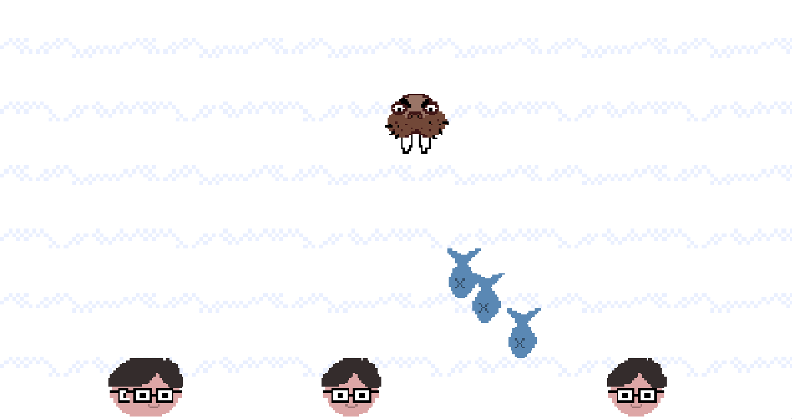

The Walrus Times
The Life and Opinions of the Coronawalrus

The inspiring journey of a common walrus to the top of the food chain
Also, why is he so fat, why are his paw-thingies so small, why are his tusks bloody and what connects him to a growing heap of dead walrus? In our investigative report we also search for the walrus's tax returns.
President Angry Walrus Says We Have the Best Fish by Far and There is No Need to Panic
The President claims that there has never been more fish. But experts say otherwise.
The Walrus Times reports that the Alpha Male of the United Huddle of Walrus declared at a press conference his unyielding dedication to provide fish for businesses.
Fish Reserves at All-Time Low
Economists warn that recovery code issues have decimated the domestic fish supply. Here's what you need to know.
Every day users are losing their recovery codes by the millions. The alternative method so far has proven ineffective. We must flatten the curve. The President has done nothing so far to alleviate the situation. But how long can the Walrus people go on if nothing changes? We have sent our reporters to Fish Cove Island to talk to the local Walrus.
President Angry Walrus throwing fish at local users who lost their recovery codes
"There ain't no damn fish anywheres", says one disgruntled citizen.